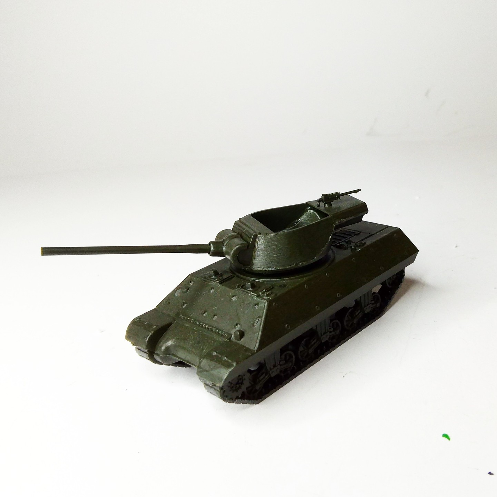
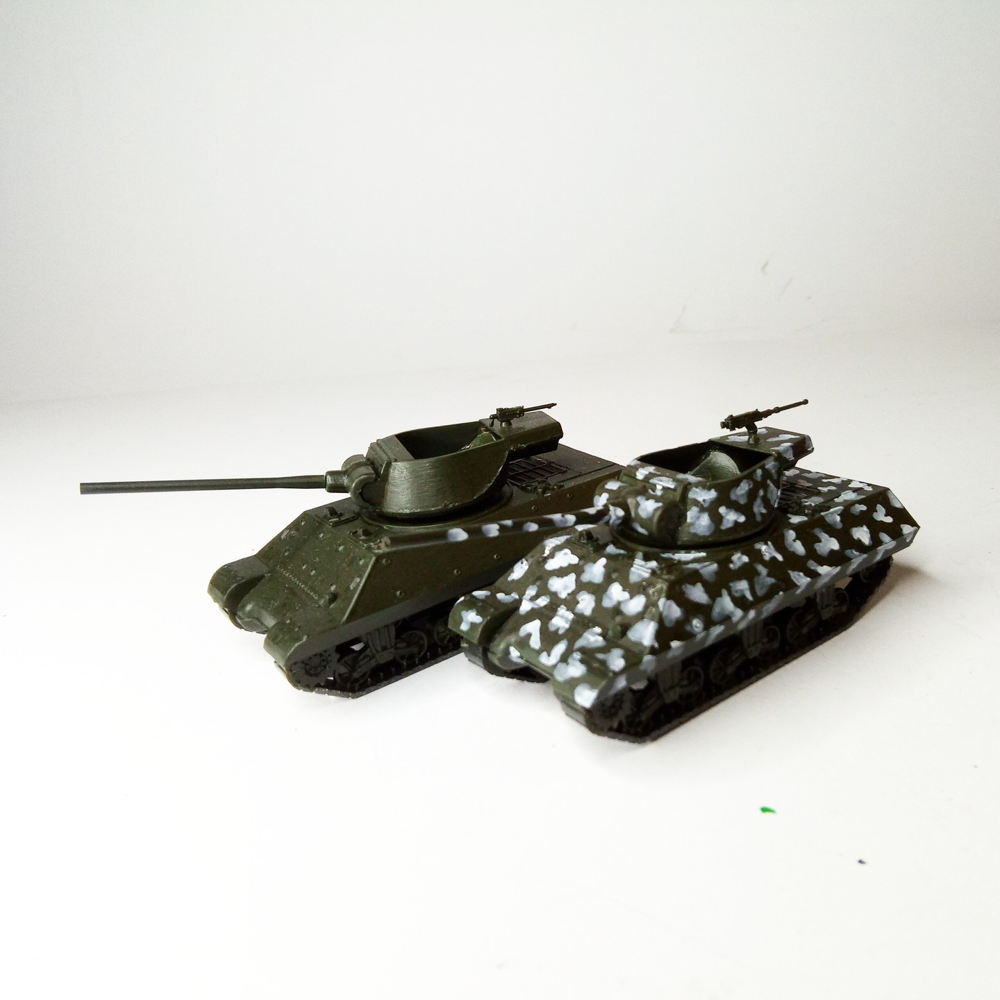

Mezzi militari · scale model archive
90mm Gun Motor Carriage M36 Jackson
90mm Gun Motor Carriage M36 Jackson — Kit: Scale: 1/72, Scale: 1/72. #1/72 #Jackson

Photo gallery

English description
#1/72 #Jackson
Mezzi militari · scale model archive
90mm Gun Motor Carriage M36 Jackson — Kit: Scale: 1/72, Scale: 1/72. #1/72 #Jackson

